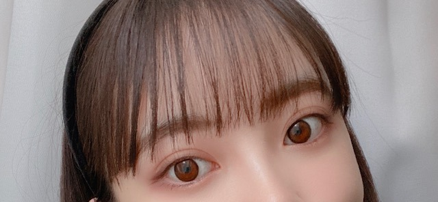

2020/0517Sun@horimiona2nd
こんばんちは
夕方に書いています
なのでこんにちはとこんばんはを混ぜました

カメラを向けられたらすぐ変顔したり
ふざけるのやめてと真夏さんに言われてから
数ヶ月経つけど
この通りなおってないです。
さあさあ
写真集公式TwitterやInstagramにて
じゃんじゃんオフショット上がってます！
見てくださってるかなー？？
コメントも読んでます☺︎
ありがとうございます☺︎
発売まであと10日✨
解禁されてない衣装も写真集内では
たくさん着ていますので
おたのしみにっ。
店舗や予約別特典もお見逃しなくー！
みなさんはどのわたしが好きなんだろう？
早く感想聞きたいです☺︎
最近はZion.Tさんと
DEANさんと
CIKIさんをずっと聴いてます
おしゃれで落ち着く歌っていいー！！
でははは
2020/05/17 17:24
コメント(313)
こんばんちは！ブログ更新ありがとう！
今日も素敵です♡
写真集の情報更新が多くて楽しみすぎます
今日も素敵です♡
写真集の情報更新が多くて楽しみすぎます
堀さん、初コメです！一応19歳です。
僕は一切コメントしない人でしたが、ZiontとDeanの文字が出てたんでコメントさせて頂きました。
Ziontは正直そんな曲知りませんが良い声ですよね。
Deanに関してはクソほどファンというか大好きで、片っ端からサブスクにあるやつひたすら聴いてます。
もし既出なら申し訳ないですけど、とりあえず130 Mood:TRBLってゆうアルバムを逆から聴いてみてください。このアルバムは7曲収録されていて、7〜1の逆の順番から聴いたら意味が繋がるらしいです。韓国語で何言っとんかわからないと思いますが。
そこんとこ調べてもらえればいいかと思います。
他にもinstagram、love(feat. Syd)、I'm Not Sorry(feat. Eric Bellinger)、dayfly(feat. Sulli,Rad Museum)、etc.
改めて既出ならごめんなさい、でもめちゃくちゃクソ良いんで是非是非聴いてください！
ちなみに僕は韓国人なんで韓国語はわかります
僕は一切コメントしない人でしたが、ZiontとDeanの文字が出てたんでコメントさせて頂きました。
Ziontは正直そんな曲知りませんが良い声ですよね。
Deanに関してはクソほどファンというか大好きで、片っ端からサブスクにあるやつひたすら聴いてます。
もし既出なら申し訳ないですけど、とりあえず130 Mood:TRBLってゆうアルバムを逆から聴いてみてください。このアルバムは7曲収録されていて、7〜1の逆の順番から聴いたら意味が繋がるらしいです。韓国語で何言っとんかわからないと思いますが。
そこんとこ調べてもらえればいいかと思います。
他にもinstagram、love(feat. Syd)、I'm Not Sorry(feat. Eric Bellinger)、dayfly(feat. Sulli,Rad Museum)、etc.
改めて既出ならごめんなさい、でもめちゃくちゃクソ良いんで是非是非聴いてください！
ちなみに僕は韓国人なんで韓国語はわかります
未央奈さんブログ更新忙しいのにマメにしてくれてありがとう。Instagramともらったよ。ありがとう。未央奈さんモンゾーと仲良くして良いですね。真夏さんは未央奈さん大好き ♥️❤️だと思うよ。じゃあなきゃふざけないでって言わない。ふざけてる未央奈さん可愛い❤️です。知ってるよ未央奈さん本当は２期生ちゃん思いなんだよね責任感も強いって聴きました。今日の写真何れも可愛い❤️じゃん。ホーリーだけは何でも許す。ファンサービス最高級です。では
未央奈ちゃんブログ更新ありがとう！
やっぱりこのギンガムチェックのお洋服めっちゃ好きです！可愛い♡
リップの色も夏っぽくなってていいね
いつもありがとう、次のブログもたのしみにしてるね
やっぱりこのギンガムチェックのお洋服めっちゃ好きです！可愛い♡
リップの色も夏っぽくなってていいね
いつもありがとう、次のブログもたのしみにしてるね
のぎたび、宣言通りほりきたコンビのページを先行して見ました。
海での写真がすごくいい(*´∀`)☆
きぃちゃんのパワフルっぷりも(笑)
なんだか、きぃちゃんとくっついてる写真率が高いですね(・∇・)
未央奈ちゃんのツインテールの写真もかわいい❤
海での写真がすごくいい(*´∀`)☆
きぃちゃんのパワフルっぷりも(笑)
なんだか、きぃちゃんとくっついてる写真率が高いですね(・∇・)
未央奈ちゃんのツインテールの写真もかわいい❤
未央奈ちゃん可愛い
未央奈ちゃん♪ブログの更新ありがとうね♪凄く嬉しいよ♪コメント遅くなってゴメンね(>_<")
ブログの写真凄く可愛い～♪変顔も凄く好きだよ(*^^*)もんぞーも可愛い！TwitterもInstagramもちゃんと見てるよ♪オフショットとか凄く可愛いよ！お洋服もメイクも凄く素敵で可愛いよ！写真集の発売日が本当に楽しみだよ♪あと、明日週刊プレイボーイ買うね♪
また、ブログの更新楽しみにしてるね♪
未央奈ちゃん大好きだよ♪堀 未央奈神推し秀喜より！(≧∇≦)
ブログの写真凄く可愛い～♪変顔も凄く好きだよ(*^^*)もんぞーも可愛い！TwitterもInstagramもちゃんと見てるよ♪オフショットとか凄く可愛いよ！お洋服もメイクも凄く素敵で可愛いよ！写真集の発売日が本当に楽しみだよ♪あと、明日週刊プレイボーイ買うね♪
また、ブログの更新楽しみにしてるね♪
未央奈ちゃん大好きだよ♪堀 未央奈神推し秀喜より！(≧∇≦)
こんばんちは
オフショットの投稿楽しみに見てます
もぐもぐ未央奈も最高です
写真集発売迫ってきたー
オフショットの投稿楽しみに見てます
もぐもぐ未央奈も最高です
写真集発売迫ってきたー
未央奈ちゃん、こんばんは。オフショットも素敵な写真がいっぱいで、写真集発売前から楽しませてもらってます。
46時間ＴＶが発表になりましたね。今のこのご時世だからこそ、ファンとしては非常にありがたい企画です。さすがに不眠不休ではオジサンは体力がもたないけど、出来る限りたくさん見たいと思います。未央奈ちゃんの電視台の企画も楽しみにしてますね。
46時間ＴＶが発表になりましたね。今のこのご時世だからこそ、ファンとしては非常にありがたい企画です。さすがに不眠不休ではオジサンは体力がもたないけど、出来る限りたくさん見たいと思います。未央奈ちゃんの電視台の企画も楽しみにしてますね。
そのオラウータンの人形の名前決まったん？
未央奈さん、こんばんは
変顔というか、かわいい～f(^_^)
こういう未央奈さんの一面がみられる
のがとても嬉しいです
インスタ見ましたよ～
ドレス姿が素敵でした(^_^)
ビーチレストランの写真も
澄んだ空が綺麗ですね
メンバーさんと連絡取り合ってますか
またコメントします
変顔というか、かわいい～f(^_^)
こういう未央奈さんの一面がみられる
のがとても嬉しいです
インスタ見ましたよ～
ドレス姿が素敵でした(^_^)
ビーチレストランの写真も
澄んだ空が綺麗ですね
メンバーさんと連絡取り合ってますか
またコメントします
未央奈がしたいなら変顔やふざけていいのでは!?
2ndじゃないけど君らしさと思うよ。
そういう顔見れるだけで嬉しいもん。
未央奈が好きな曲聞いてみます。
写真集とどくまでカウントダウンしてて日々過ぎてくほど楽しみがふくれてく!
楽しみを感じさせてくれてありがとう未央奈!
ではまたコメントおじゃまします。
2ndじゃないけど君らしさと思うよ。
そういう顔見れるだけで嬉しいもん。
未央奈が好きな曲聞いてみます。
写真集とどくまでカウントダウンしてて日々過ぎてくほど楽しみがふくれてく!
楽しみを感じさせてくれてありがとう未央奈!
ではまたコメントおじゃまします。
こんばんわ。未央奈ちゃん
写真集発売楽しみやねぇ～！
僕は、行くあてのない僕たちが乃木坂の楽曲の中で好きな曲なんやけど今年のバスラで未央奈ときぃちゃんが歌ってくれてたのがめっちゃ嬉しかったんよねぇ
ライブでこの曲聞いた事無くて、しかもバスラのチケット２日目しか取れて無かった状態で生で初めて見た「行く僕」が未央奈ときぃちゃんのユニットだったのが奇跡過ぎて それに２日目は堀さま軍団もゴルゴンゾーラもかき氷もやってくれて、未央奈dayだったから未央奈推しの僕にとっては至福の時間やったんよ
それに２日目は堀さま軍団もゴルゴンゾーラもかき氷もやってくれて、未央奈dayだったから未央奈推しの僕にとっては至福の時間やったんよ
早くバスラのＤＶＤ発売されて欲しいです未央奈きぃちゃんの「行く僕」毎日観れるの幸せ過ぎるよね
未央奈大好きやぁ～
写真集発売楽しみやねぇ～！
僕は、行くあてのない僕たちが乃木坂の楽曲の中で好きな曲なんやけど今年のバスラで未央奈ときぃちゃんが歌ってくれてたのがめっちゃ嬉しかったんよねぇ
ライブでこの曲聞いた事無くて、しかもバスラのチケット２日目しか取れて無かった状態で生で初めて見た「行く僕」が未央奈ときぃちゃんのユニットだったのが奇跡過ぎて
早くバスラのＤＶＤ発売されて欲しいです
未央奈大好きやぁ～
ブログ更新ありがとー
写真集待ちきれないよー
体調には気をつけて
これからもずっと応援してるよー！
写真集待ちきれないよー
体調には気をつけて
これからもずっと応援してるよー！
こんばんにちは！←流行りそう。
まこまめにブログ更新してくれてありがとう〜♡
自粛中の楽しみにしてます！
まこまめにブログ更新してくれてありがとう〜♡
自粛中の楽しみにしてます！
写真見ました！とっても可愛くて世界観も素敵でほんとにほんとに発売日が待ち遠しいです！♥
細くてスタイル良くて最っ高に可愛いです！☺️
細くてスタイル良くて最っ高に可愛いです！☺️
みおな、こんばんは！更新ありがとう。 近況報告ありがとうございます。 発売日楽しみにしてます。 では、毎日みおなに良いこと沢山ありますように！ おやすみおな！！
ヤッホー未央奈ブログありがとーもんぞー君だんだん生きてるみたい笑、、どの未央奈も可愛いし、いや綺麗です。だんだん写真集の発売も近づいていますねー楽しみにして待ってます❗体に気配りして健康でいてくださいね❗でわおやすみなさい ｡
昔から写真を撮られるのが苦手で、カメラを向けられると困ってしまいます。
だから、どの写真も変な表情になってしまい、余計に写真が苦手に。
治らなくても困らないので、大丈夫なんですけどね。
(^-^)
だから、どの写真も変な表情になってしまい、余計に写真が苦手に。
治らなくても困らないので、大丈夫なんですけどね。
(^-^)
こんばんは！
今日も更新ありがとうございます！
いつも仕事終わりに未央奈ちゃんのブログ見るのが日課になってます(*^^*)
写真集楽天バージョンを予約しました！
とっても楽しみです！！
最近温度差激しかったりもするから体調には気をつけてね！
今日も更新ありがとうございます！
いつも仕事終わりに未央奈ちゃんのブログ見るのが日課になってます(*^^*)
写真集楽天バージョンを予約しました！
とっても楽しみです！！
最近温度差激しかったりもするから体調には気をつけてね！
オフショットめっちゃ見てまーーす！
可愛いです！！最高です！！こんばんちは！！
変顔も
可愛いです！！最高です！！こんばんちは！！
可愛いです！！最高です！！こんばんちは！！
変顔も
可愛いです！！最高です！！こんばんちは！！
黒のカチューシャ似合ってとても可愛い。
変顔しても可愛いく写ってますよー。
色々なカチューシャも似合いそう。
色々な服などきこなして、そして女子力高めなので満足してます。本当にありがとう。これからも女子力高め堀未央奈ちゃんに期待して写真集発売楽しみにしてます。
あと乃木坂46時間テレビ頑張って下さい。
オススメの物紹介してください。
変顔しても可愛いく写ってますよー。
色々なカチューシャも似合いそう。
色々な服などきこなして、そして女子力高めなので満足してます。本当にありがとう。これからも女子力高め堀未央奈ちゃんに期待して写真集発売楽しみにしてます。
あと乃木坂46時間テレビ頑張って下さい。
オススメの物紹介してください。
みおなちゃん！！
インスタのオフショットと動画めっちゃかわいかった
走ってるとこめっちゃかわいい！
足細い✨✨
写真集発売まであともう少しだね！
たのしみ✨
インスタのオフショットと動画めっちゃかわいかった
走ってるとこめっちゃかわいい！
足細い✨✨
写真集発売まであともう少しだね！
たのしみ✨
みおぴちゃんちゃん！ブログ更新ありがとう！( •̥ ˍ •̥ )♡♡
あと10回寝れば未央奈ちゃんの写真集！すっごく楽しみ～～
大好きだよ～～とてもとても^._.^♡♡
あと10回寝れば未央奈ちゃんの写真集！すっごく楽しみ～～
大好きだよ～～とてもとても^._.^♡♡
こんばんちは！
今月末写真集すごい楽しみであと10日待ちきれない！
乃木坂46時間テレビもすごい楽しみです！
またインスタライブとかもやってくださいね！
では～
今月末写真集すごい楽しみであと10日待ちきれない！
乃木坂46時間テレビもすごい楽しみです！
またインスタライブとかもやってくださいね！
では～
堀ちゃん！更新ありがとう！
もうすぐ発売だね！！
オフショット等々もいつも見てるよ〜！
やっぱり個人的には
通常版の堀ちゃんが
いっちばん好きなので
買おっかなと思ってますよ！！
堀ちゃんおすすめのショット
発売後に教えて欲しいです！
次回の更新も楽しみに待ってます！
では！
おやすみおな〜！！
もうすぐ発売だね！！
オフショット等々もいつも見てるよ〜！
やっぱり個人的には
通常版の堀ちゃんが
いっちばん好きなので
買おっかなと思ってますよ！！
堀ちゃんおすすめのショット
発売後に教えて欲しいです！
次回の更新も楽しみに待ってます！
では！
おやすみおな〜！！
未央奈、ブログありがとう。
変顔もかわいいよ。写真集、予約したよ。
発売がまちどうしいな。
変顔もかわいいよ。写真集、予約したよ。
発売がまちどうしいな。
未央奈ブログ更新ありがとう!
未央奈の写真集のオフショットを見るためにインスタ始めたよ！
発売日が待ち遠しい!
いつもブログ更新ありがとね!
これからも応援してるよ!
体調には気をつけてね!
by未央奈推しのブラックコーヒー
未央奈の写真集のオフショットを見るためにインスタ始めたよ！
発売日が待ち遠しい!
いつもブログ更新ありがとね!
これからも応援してるよ!
体調には気をつけてね!
by未央奈推しのブラックコーヒー
更新待ってました〜
こんばんは~(夜になってしまった…)
私は未央奈ちゃんの変顔大好きだから
カメラ向けてもふざけたり変顔したり
して欲しい笑どの未央奈ちゃんが好きかって
言われても~決められないです笑全部好き( ¨̮ )
次の更新も待ってます✩.*˚
こんばんは~(夜になってしまった…)
私は未央奈ちゃんの変顔大好きだから
カメラ向けてもふざけたり変顔したり
して欲しい笑どの未央奈ちゃんが好きかって
言われても~決められないです笑全部好き( ¨̮ )
次の更新も待ってます✩.*˚
ワキの体操コントも変顔もきれいな顔もあって堀ちゃん。
真夏お姉さんからの信頼の証やね
真夏お姉さんからの信頼の証やね
未央奈ちゃん！
ブログ更新ありがとう！
変顔してくれるメンバーが少ないので分かりやすいです!
それでもかわいいからOKです!!
46時間TV楽しみにしています!
ずっと応援しています☺️☺️
ブログ更新ありがとう！
変顔してくれるメンバーが少ないので分かりやすいです!
それでもかわいいからOKです!!
46時間TV楽しみにしています!
ずっと応援しています☺️☺️
ブログ更新ありがと～！！
インスタとか凄い見てる！
46時間テレビ楽しみです！
写真集絶対買って早くみたいです！
インスタとか凄い見てる！
46時間テレビ楽しみです！
写真集絶対買って早くみたいです！
46時間テレビ解禁されたね
ブログ更新ありがとう
もんぞーもかわいいね
楽天ブックスのアザーカバーが好き
ずっと応援してます
もんぞーもかわいいね
楽天ブックスのアザーカバーが好き
ずっと応援してます
ブログ更新ありがとう！楽しみだな～。最近暑くなってきたし、お互い体調に気を付けて頑張ろう！！次も絶対見るからね！
未央奈ちゃん、 こんばんは！
最近レコメンでは、小梅太夫さんやクールポコさんが流行りらしいです。一応
写真も良いですね！前回と同じ服ですかねチェックだったらタータンチェックとギンガムチェックどちらが好きですかね？他にもチェックってありましたかねぇ？
ではおやすみ
最近レコメンでは、小梅太夫さんやクールポコさんが流行りらしいです。一応
写真も良いですね！前回と同じ服ですかねチェックだったらタータンチェックとギンガムチェックどちらが好きですかね？他にもチェックってありましたかねぇ？
ではおやすみ
こんばんちは〜
ブログ更新ありがとうございます
今日も未央奈さんかわいい
大好きです
写真集発売まであと10日だー！
楽しみ〜！！
早く見たいなぁ
これからも頑張ってください
ずっと応援しています
今日も未央奈さんに元気を貰いました
いつもありがとうございます
次の更新も楽しみにしています
では
ブログ更新ありがとうございます
今日も未央奈さんかわいい
大好きです
写真集発売まであと10日だー！
楽しみ〜！！
早く見たいなぁ
これからも頑張ってください
ずっと応援しています
今日も未央奈さんに元気を貰いました
いつもありがとうございます
次の更新も楽しみにしています
では
こんばんわん
ブログ更新ありがと！
いつもふざけちゃう堀ちゃん好きです
いつも楽しそうやなって思う
あと10日！
早いね～
わくわく
ではまた(*´▽｀*)
ブログ更新ありがと！
いつもふざけちゃう堀ちゃん好きです
いつも楽しそうやなって思う
あと10日！
早いね～
わくわく
ではまた(*´▽｀*)
オフショット全部見たよ！！後ろ姿がすごく綺麗で、美しさの具現化やぁあ！！！と思って見ていました笑笑 あと、いろんな表情が見れて嬉しいし、ヨーロッパの雰囲気にすごく合ってる！！あと、顔が本当に可愛くて、もうずっと憧れです！！あと性格も、自分が尊敬できる人だから、写真集で1stの時みたいにインタビューとかあるのかな？って楽しみです！格言というか、名言を残していくところが好きで、私も未央奈ちゃんみたいな心の持ち主になりたい！！！！2nd写真集本当に楽しみです！！！
ももんが
ももんが
変顔イイです。 どしどし載せて下さい。
色んな未央奈の顔は未央奈の性格の一面を感じる事が
出来る貴重な機会なので大歓迎です。
でも今回の変顔、確かにいつもとは違って面白い
ですが、やっぱ土台が可愛いので笑いが止まらない
ってレベルじゃあないかな？（笑笑笑）
いいんです、いいんです、未央奈の思う変顔でいいんです。
無理してまで笑いを取る事無いですから（笑）
・・・でもチョットは見てみたいかも（笑笑）
これからを楽しみにしております。（笑）
ちなみにですが、
昨日、のぎたびフォトブックが届きました。
まだしっかりと見た訳ではないですが、きいちゃんと
楽しそうに笑ったり馬に乗ったりしているのを見る
だけで楽しくて仕方ないです。
写真集の未央奈がどんな表情を見せてくれているのか
楽しみが倍増しましたよ。
デハハハ
色んな未央奈の顔は未央奈の性格の一面を感じる事が
出来る貴重な機会なので大歓迎です。
でも今回の変顔、確かにいつもとは違って面白い
ですが、やっぱ土台が可愛いので笑いが止まらない
ってレベルじゃあないかな？（笑笑笑）
いいんです、いいんです、未央奈の思う変顔でいいんです。
無理してまで笑いを取る事無いですから（笑）
・・・でもチョットは見てみたいかも（笑笑）
これからを楽しみにしております。（笑）
ちなみにですが、
昨日、のぎたびフォトブックが届きました。
まだしっかりと見た訳ではないですが、きいちゃんと
楽しそうに笑ったり馬に乗ったりしているのを見る
だけで楽しくて仕方ないです。
写真集の未央奈がどんな表情を見せてくれているのか
楽しみが倍増しましたよ。
デハハハ
お疲れ様です!
こんばんちは
変顔する未央奈ちゃんいつも可愛い
写真集本当に楽しみです！
どんな未央奈ちゃんも楽しみです！
今日初めて「悲しみの忘れ方 Documentary of 乃木坂46」を観ました！
1期生中心の映画だけど、最後に未央奈ちゃんが出てきて嬉しくなりました
未央奈ちゃんはこの映画を観返すことありますか？
未央奈ちゃん大好き
変顔する未央奈ちゃんいつも可愛い
写真集本当に楽しみです！
どんな未央奈ちゃんも楽しみです！
今日初めて「悲しみの忘れ方 Documentary of 乃木坂46」を観ました！
1期生中心の映画だけど、最後に未央奈ちゃんが出てきて嬉しくなりました
未央奈ちゃんはこの映画を観返すことありますか？
未央奈ちゃん大好き
楽しみは写真集だけです。
堀さん、こんばんは。
今回の堀さんブログのご挨拶でふと思い出しましたことなど。
鳥山明先生に『Dr.スランプ』という作品があります。そこに登場するアラレちゃん（久保さんがコスプレしてましたね）の挨拶に「おはこんばんちは」というのがありまして、これなら一日中使えるという便利なご挨拶。これからは僕もこの挨拶にしようかな（笑）。
写真集発売まであと10日。表紙も特典もいろいろなデザインがあってよりどりみどり。迷ってしまいます。楽しみですね。
ではまたコメントします。
さらばだ、また会おう！（気球に乗って去りぬ〜）
今回の堀さんブログのご挨拶でふと思い出しましたことなど。
鳥山明先生に『Dr.スランプ』という作品があります。そこに登場するアラレちゃん（久保さんがコスプレしてましたね）の挨拶に「おはこんばんちは」というのがありまして、これなら一日中使えるという便利なご挨拶。これからは僕もこの挨拶にしようかな（笑）。
写真集発売まであと10日。表紙も特典もいろいろなデザインがあってよりどりみどり。迷ってしまいます。楽しみですね。
ではまたコメントします。
さらばだ、また会おう！（気球に乗って去りぬ〜）
堀ちゃんーーー変顔、お目目ぱちぱち
もんぞーくんもお目目、改めてよくみるとデカッ
おやすみ
ブログ更新ありがとうございます！
未央奈さんももんぞーもかわいいです！
変顔昔カメラ向けられたらしてました笑
変顔も素敵です！
次のブログも楽しみにしてます！
未央奈さんももんぞーもかわいいです！
変顔昔カメラ向けられたらしてました笑
変顔も素敵です！
次のブログも楽しみにしてます！
未央奈ちゃんブログ更新ありがとう！
さくらちゃんとあやめちゃんとでんちゃんと同じ愛知県出身の愛知の覇王です！
いつも、ツイッター、インスタグラム、見てます！
発売が待ち遠しいです！
必ず買います！
そして、乃木坂46時間TV放送決定おめでとう！
久々の乃木坂46時間TV、めっちゃ嬉しいです！
未央奈ちゃんの電視台、楽しみにしてます！
体調を崩さないように気をつけて頑張ってください！
応援してます！
さくらちゃんとあやめちゃんとでんちゃんと同じ愛知県出身の愛知の覇王です！
いつも、ツイッター、インスタグラム、見てます！
発売が待ち遠しいです！
必ず買います！
そして、乃木坂46時間TV放送決定おめでとう！
久々の乃木坂46時間TV、めっちゃ嬉しいです！
未央奈ちゃんの電視台、楽しみにしてます！
体調を崩さないように気をつけて頑張ってください！
応援してます！
堀さん今日もお綺麗です！
堀ちゃんテレビでもっといい変顔してたよ笑
堀ちゃんテレビでもっといい変顔してたよ笑
写真集もう少しだね！発売おめでとう！
ライスくださいが、おもしろすぎて
50回くらい見てます笑
ライスくださいが、おもしろすぎて
50回くらい見てます笑


おうち姿も可愛いらしいですね♡
もんぞーくんの姿にも癒されるし、
今回の表情にも安らぎを覚えます☆
カメラワークも素晴らしいですね！
様々な表情が見られて嬉しいです✨
写真集オフショット凄く魅力的です！
気分もどんどん盛り上がってきます✌
まだ知らない姿もとっても楽しみです☺